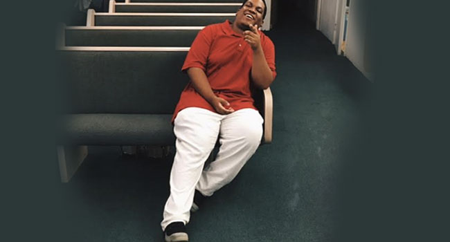

Terrel Butler AKA "Big T"
Terrell Butler is originally from Oakland California. Big-T has always been the
comedian of his social circle. Taking the stage for the first time in 2007 as a stand up ccomic, he
hit the ground running. He has quickly earned respect at the premier comedy clubs across
Northern and Southern California as a headlining performer.
Big-T is in his senior year at the Academy of Art University. He hopes to graduate in May
2017 with a degree in Communication and Media Technology. He is the Winner of the 2016
Rooster T. Feathers Comedy Competition, in Sunnyvale CA. As a stand up comedian, Big-T
draws his comedy from life experience. Ranging from The colorful characters in his family, his
life as an Oakland youth, and his years as a bouncer in Bay Area night & strip clubs. He credits
his influence in stand up to legends like Eddie Murphy, Richard Pryor, Robert Townsand, and
Red Foxx.
Comedy has awakened a new spirit in the 6 foot 3, 315 pound, devilishly
handsome, Big-T. A spirit that has inspired him to produce and host his own live showcase,
podcast, and a series of comedy mix tapes.


![ Noah My name is Noah Rivers and I am the mind behind Hashtag (#) The Praise Break. I am from the Bay Area in California. Being born and raised in the church I've seen funny things happen in these many denominations. Why not highlight the funny side of the church instead of the strict and uptight side? I created Hashtag (#) The Praise Break to be a comedic Gospel show. You’ve seen Christian comedians and hilarious YouTubers talk about the church, but how about a radio show? This is what Hashtag (#) The Praise Break is all about.](img/noah.jpg){kind=link}
{kind=link}